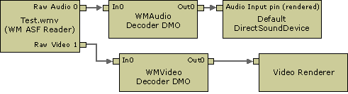

title: Learn about DirectShow in Windows Media Format 11 SDK, a high-level, modular, extensible, data-streaming architecture for the Windows platform. description: About DirectShow ms.assetid: 1a0b68c7-9444-4389-8d81-dc734e95634d keywords:
[The feature associated with this page, Windows Media Format 11 SDK, is a legacy feature. It has been superseded by Source Reader and Sink Writer. Source Reader and Sink Writer have been optimized for Windows 10 and Windows 11. Microsoft strongly recommends that new code use Source Reader and Sink Writer instead of Windows Media Format 11 SDK, when possible. Microsoft suggests that existing code that uses the legacy APIs be rewritten to use the new APIs if possible.]
DirectShow is a high-level, modular, extensible, data-streaming architecture for the Windows platform. It provides the underlying software components and application programming interfaces (APIs) for a wide variety of digital audio and video applications on the market today. DirectShow is available as part of the Microsoft DirectX Software Development Kit. To learn more about DirectShow, see the Microsoft Platform SDK.
In DirectShow, all data streaming components are called filters. A filter may represent a hardware device, a software encoder or decoder, an audio or video renderer, or any audio-video processing capability. To enable DirectShow–based applications to read and write Windows Media Format content, including content protected by Digital Rights Management (DRM), Microsoft provides two filters that encapsulate portions of the Windows Media Format SDK. These are the WM ASF Reader and the WM ASF Writer. These filters and the interfaces they expose are collectively referred to as the QASF components, after the DLL in which they are packaged. (The Q stands for Quartz, an early code name for DirectShow.)
[!Note]
The use of the Windows Media Audio and Video 9 Series codecs through the DirectShow QASF components requires Microsoft Windows Millennium Edition or later, or DirectX 8.0 or later.
Â
The following diagram shows a DirectShow filter graph for playing back Windows Media Video files.

The WM ASF Reader is a QASF component, the decoders are Windows Media Format SDK components hosted in the DMO Wrapper filter (a QASF component), and the renderers are DirectShow components.
Â
Â